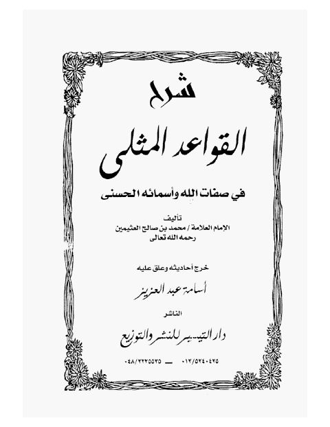

Downloads need an internet connection.
شرح القواعد المثلى في صفات الله وأسمائه الحسنى- دار التيسير
Authors: محمد بن صالح العثيمين
Editors: أسامة عبد العزيز
Publishers: دار التيسير
**▫️ العنوان: شرح القواعد المثلى في صفات الله وأسمائه الحسنى- دار التيسير** ▪️ المؤلف: #محمد_بن_صالح_العثيمين ▫️ المحقق: #أسامة_عبد_العزيز ▪️ الناشر: #دار_التيسير ▫️ تاريخ النشر: 1426-2005 ▪️ الطبعة: 1 ▫️ عدد الأجزاء: 1 ▪️ الصفحات: 400 ▫️ نوع الوعاء: #كتاب ▪️ التصنيف الرئيسي: #العقيدة_والمذاهب_والأديان ▫️ التصنيف الفرعي: #الأسماء_والصفات ۪